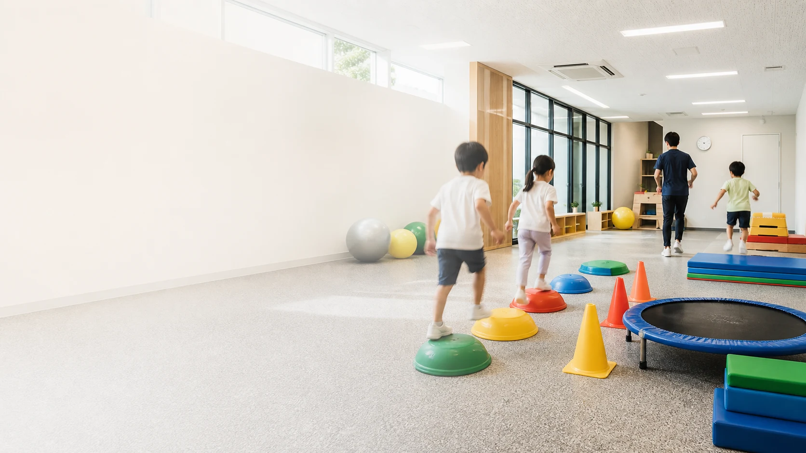
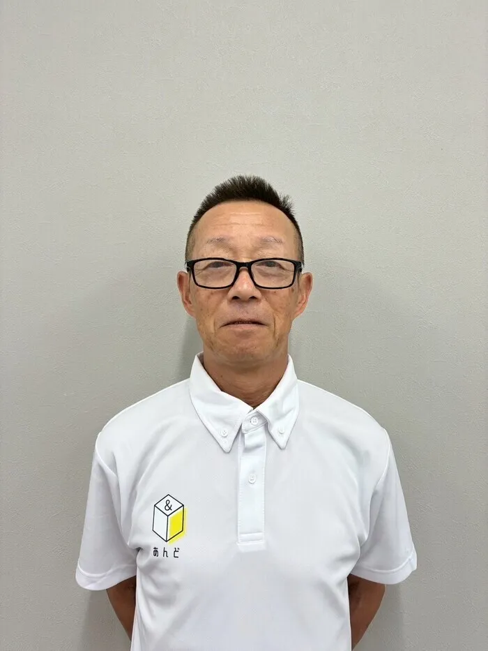
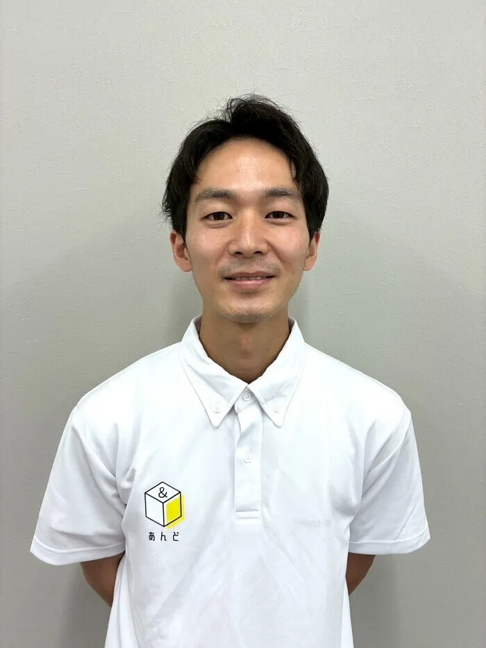
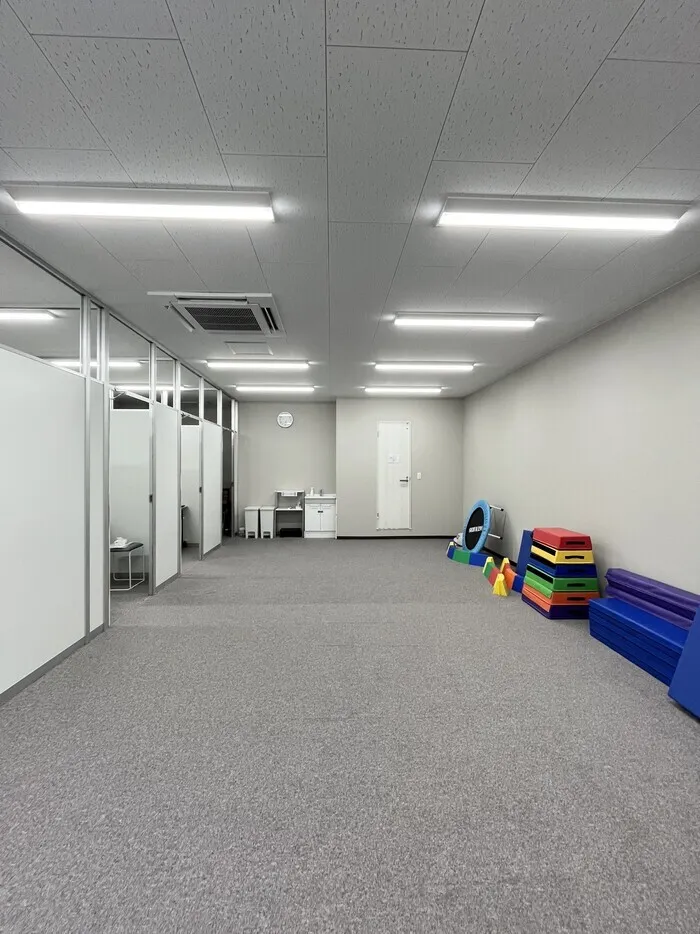
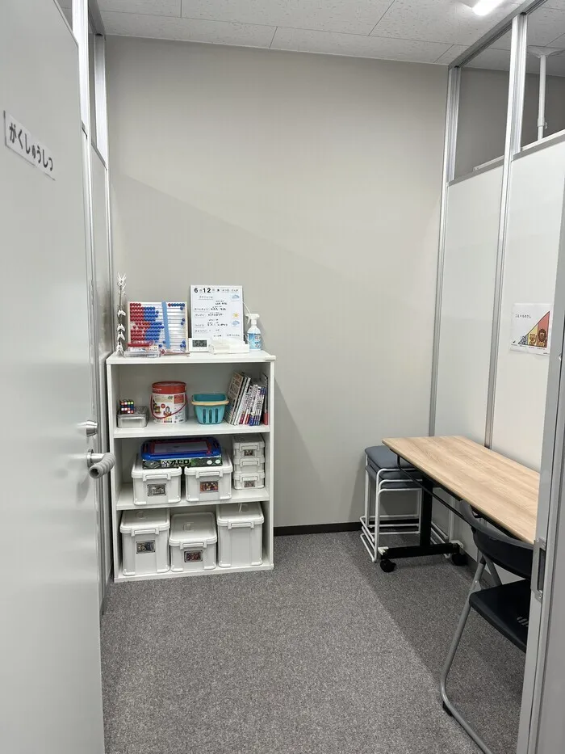
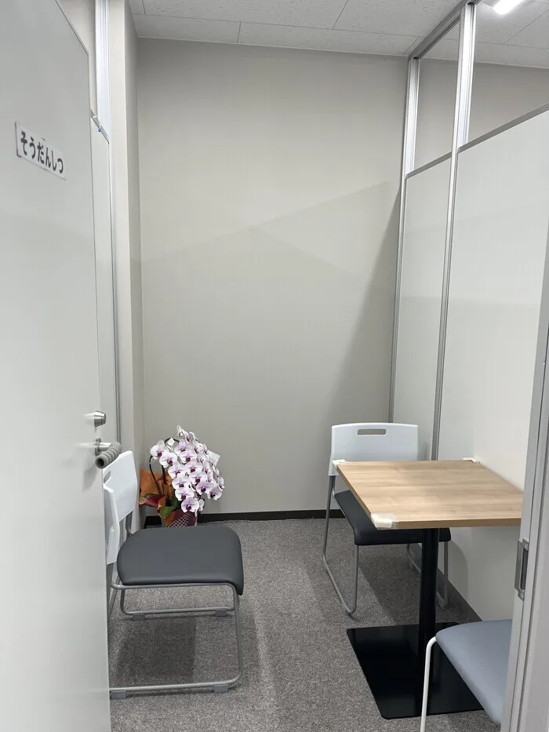

児童発達支援管理責任者
元体育教師を経て放課後等デイサービス経験8年目になりました。
主に運動療育を中心に支援、感覚統合やソーシャルスキルトレーニング、ABA、ペアトレなど研鑽を重ねてまいりました。
専門：ダンス、バスケットボール
大阪府豊中市の放課後等デイサービス
私たち『あんど』では、運動療育を中心に、５領域を網羅した子どもたち一人ひとりの発達に合わせた支援を行っています。
お問合せ受付時間10:00〜19:00

私たち『あんど』では、運動療育を中心に、５領域を網羅した子どもたち一人ひとりの発達に合わせた支援を行っています。
さらに、『あんど』のスタッフは、元体育教師や元幼児体育講師など、運動指導の経験が豊富なメンバーが中心。
スポーツやゲーム、リクレーション等でマナーやルール理解などを小集団で分かりやすく指導しながら、学校などの集団生活に適応できるよう支援します。
認知力・集中力・洞察力・身体能力などを早いうちから身に付けることで、楽しく運動や学習できるように支援します。
体の成長と共に発達する心の成長に対して適切な人間関係の構築や社会性を習得することで明るい将来が描けるよう支援します。
運動療育を中心に、5領域を網羅したきめ細かい支援を実施します。
ご利用者様や保護者様のニーズに合わせて、教育・保育に専門的知識を持ちかつ経験豊かな指導員が対応させていただきます。
発達に関してのお困りごとや将来に向けてのビジョンについて相談援助を行い、お子様にあった支援プログラムを作成させていただきます。
保育士・幼稚園教諭 児童指導員
元体育教師を経て放課後等デイサービス経験8年目になりました。
主に運動療育を中心に支援、感覚統合やソーシャルスキルトレーニング、ABA、ペアトレなど研鑽を重ねてまいりました。
専門：ダンス、バスケットボール

中学校の保健体育の教諭を39年やってまいりました。
（大阪府教育委員会優秀教員表彰受賞✨）
退職後、大学の陸上競技部の指導と健康活動、体育実技の教員に歴任しました。
専門：陸上

幼稚園や保育園、こども園などで体操の先生をやっていました！
体を動かすことが大好きなので、みんなで楽しく運動をしましょう！
一度あんどに遊びに来てください！！✨
専門：野球
保育士資格保有 小学校の介助員
放課後等デイサービスに勤務して３年目になります。
こどもたちと一緒に創作活動をして遊ぶのが大好きです！
自由な発想で色んな創作活動をしていきましょう！
専門：創作活動



〒560-0084 大阪府豊中市新千里南町2-4-4 グランドール千里102号室
北大阪急行「桃山台駅」「千里中央駅」、阪急千里線「南千里駅」、大阪モノレール「少路駅」「山田駅」からご来所いただけます。
Googleマップで地図を開く| 月 | 火 | 水 | 木 | 金 | 土 | 日 | 祝 |
|---|---|---|---|---|---|---|---|
| ●受付 | ●受付 | ●受付 | ●受付 | ●受付 | -休み | -休み | ●受付 |
※ 療育時間は、直接事業所にお問合せください
※ 営業時間外も問い合わせは受け付けております